Learning objectives
- Inspect vector geometry, attributes and CRS before processing.
- Dissolve, split and overlay polygon geometries.
- Choose and interpret spatial predicates for polygons, lines and points.
- Transfer contextual attributes by location without silently changing the point layer.
- Export results and verify feature identifiers, geometry and missing matches.
dept.gpkg, litho.gpkg, struct.gpkg and mines.gpkg files in data/vectors/. The script uses terra and RColorBrewer. Download the complete R script ↓. Rebuild the figures with source("scripts/05-render-blocks.R").Three different kinds of spatial work
| Task | Geometry | Attributes |
|---|---|---|
| Overlay, for example intersect() | May be cut or recombined. | May combine input fields, depending on the operation. |
| Selection with is.related() | Selected whole features are retained. | Source records remain attached to those features. |
| Attribute extraction and join | The point locations are preserved. | Contextual fields are added using checked identifiers. |
Click a function name to open its help. Read the full definition of the chosen predicate and keep track of which layer is x and which is y. In RStudio, use help("is.related", package = "terra").
5.1 · Define the study area
Why this step?
Select Ardèche, Haute-Loire and Lozère by their department codes. %in% tests membership in the code list; the bracket expression retains the matching features and their attributes.
# Select the three departments used in this course.
library(terra)
library(RColorBrewer)
dir.create("outputs", showWarnings = FALSE)
dept <- vect("data/vectors/dept.gpkg")
dept <- dept[dept$code %in% c("07", "43", "48"), ]
as.data.frame(dept)
crs(dept, describe = TRUE)
Why these functions?
library()— Load terra for spatial operations and RColorBrewer for categorical colours.dir.create()— Create the outputs directory before writing new files.vect()— Read the supplied GeoPackage layers or reopen an exported layer.c()— Collect department codes, labels and plotting settings.as.data.frame()— Inspect the attribute table separately from its geometry.crs()— Inspect the coordinate reference system of the department layer.
Result of running this code in R
R console output
code nom
1 07 Ardèche
2 43 Haute-Loire
3 48 Lozère
name authority code
1 ETRS89-FRA [RGF93 v1] / Lambert-93 EPSG 2154
area
1 France - onshore and offshore, mainland and Corsica (France métropolitaine including Corsica)
extent
1 -9.86, 10.38, 41.15, 51.56
How to read the result. Read the three department records and their CRS. The active geometry has a spatial reference; coordinate-looking columns in an attribute table are not automatically the geometry used by spatial functions.
5.1.1 · Read polygons, lines and points
Why this step?
Import the lithology polygons, geological structures and mine points. The explicit point identifier will help check the later attribute transfers. Check that the layers share a CRS and that polygon geometries are valid before overlays.
# Read polygons, lines and points; verify their spatial references.
litho <- vect("data/vectors/litho.gpkg")
struct <- vect("data/vectors/struct.gpkg")
mines <- vect("data/vectors/mines.gpkg")
mines$point_id <- seq_len(nrow(mines))
stopifnot(same.crs(dept, litho), same.crs(dept, struct), same.crs(dept, mines),
all(is.valid(dept)), all(is.valid(litho)))
data.frame(layer = c("departments", "lithology", "structures", "mines"),
features = c(nrow(dept), nrow(litho), nrow(struct), nrow(mines)))
head(as.data.frame(litho))
head(as.data.frame(struct))
head(as.data.frame(mines))
Why these functions?
vect()— Read the supplied GeoPackage layers or reopen an exported layer.seq_len()— Create stable row identifiers and feature-number labels.nrow()— Count spatial features or attribute-match rows.stopifnot()— Stop if a CRS, identifier, feature-count or geometry-preservation check fails.same.crs()— Verify that spatial inputs and reopened exports use compatible reference systems.all()— Require the geometry-validity checks to hold for every input polygon.is.valid()— Check polygon validity before geometric overlays.data.frame()— Present feature counts, overlay fields and selected-feature counts as tables.c()— Collect department codes, labels and plotting settings.head()— Preview fields and matches before processing the complete table.as.data.frame()— Inspect the attribute table separately from its geometry.
Result of running this code in R
R console output
layer features
1 departments 3
2 lithology 80
3 structures 501
4 mines 153
TYPE DESCR
1 Sedimentary Sandstone
2 Sedimentary Sandstone
3 Sedimentary Clay
4 Magmatic Granite
5 Magmatic Basalt and rhyolith
6 Sedimentary Clay
CODE_TRAIT TYPE_TRAIT CODE_GEOL NATURE IMPORTANCE
1 410 faille 410 indifférencié (observé) importante
2 410 faille 411 normale ou détachement majeure
3 410 faille 410 indifférencié (observé) majeure
4 410 faille 410 indifférencié (observé) majeure
5 410 faille 413 décrochement majeure
6 410 faille 410 indifférencié (observé) importante
SENS NOM COMMENT TERRE_MER CODE_LEG
1 non renseigné non renseigné <NA> T 11
2 non renseigné non renseigné <NA> T 20
3 non renseigné non renseigné <NA> T 11
4 non renseigné non renseigné <NA> T 11
5 non renseigné non renseigné <NA> T 24
6 non renseigné non renseigné <NA> T 11
gid id_unique x_l2et y_l2et substance c_group taille nom_site
1 93 134-1 742723 1931555 Coal 7 2 Alès
2 127 1372-1 733406 1940653 Pb 2 0 La Rouvière
3 129 1374-1 794167 1932218 Phos 8 0 St Paul
4 140 1384-1 700887 1931618 Brt 10 0 Malbosc
5 141 1385-1 726103 1937644 Cu 2 0 Le Pouget
6 142 1386-1 706246 1927119 Pb 2 1 Ramponenche
id_exploitation id_site ordre point_id
1 134 1 1 1
2 1372 1 1 2
3 1374 1 1 3
4 1384 1 1 4
5 1385 1 1 5
6 1386 1 1 6
How to read the result. The teaching data contain 80 lithology features, 501 line features and 153 mine points. These are feature counts, not surface areas or a current inventory of active sites.
5.1.2 · Inspect the datasets and their fields
Why this step?
The lithology field TYPE groups rocks into broad families, while DESCR distinguishes detailed rock descriptions. Use qualitative palettes for these categories. The line and point views show where the other layers lie relative to the departments.
Full code for this comparison
# Broad groups and detailed descriptions answer different questions.
type_levels <- sort(unique(litho$TYPE))
description_levels <- sort(unique(litho$DESCR))
type_palette <- brewer.pal(length(type_levels), "Set2")
description_palette <- brewer.pal(length(description_levels), "Set3")
plot(litho, "TYPE", col = type_palette, main = "Lithology: broad groups",
mar = c(3, 4, 3, 10), plg = list(cex = 0.8))
plot(litho, "DESCR", col = description_palette, main = "Lithology: rock descriptions",
mar = c(3, 4, 3, 11), plg = list(cex = 0.7))
plot(dept, col = "#e2e6e2", ext = union(ext(struct), ext(dept)),
main = "Geological structures")
lines(struct, col = "#365b8c", lwd = 1)
plot(dept, col = "#e2e6e2", ext = union(ext(mines), ext(dept)),
main = "Mine locations in the teaching dataset")
points(mines, pch = 19, col = "#8b4d3f", cex = 0.6)
Why these functions?
sort()— Order category labels consistently before constructing palettes.unique()— Find the distinct lithological groups used to define categorical palettes.brewer.pal()— Choose qualitative colours for broad lithology groups and rock descriptions.length()— Count groups or predicates to size the result vectors.plot()— Display a spatial layer and its categorical attributes.c()— Collect department codes, labels and plotting settings.list()— Store each overlay result under its operation name.union()— Combine polygon footprints and shared attributes, or combine map extents.ext()— Read layer bounds so selected and non-selected features share a complete map frame.lines()— Overlay department boundaries or draw geological line features.points()— Draw all mine locations and highlight the selected points.
Result of running this code in R
Lithology · TYPE
Broad rock groups, using the TYPE field.
Code
plot(litho, "TYPE", col = type_palette, main = "Lithology: broad groups",
mar = c(3, 4, 3, 10), plg = list(cex = 0.8))
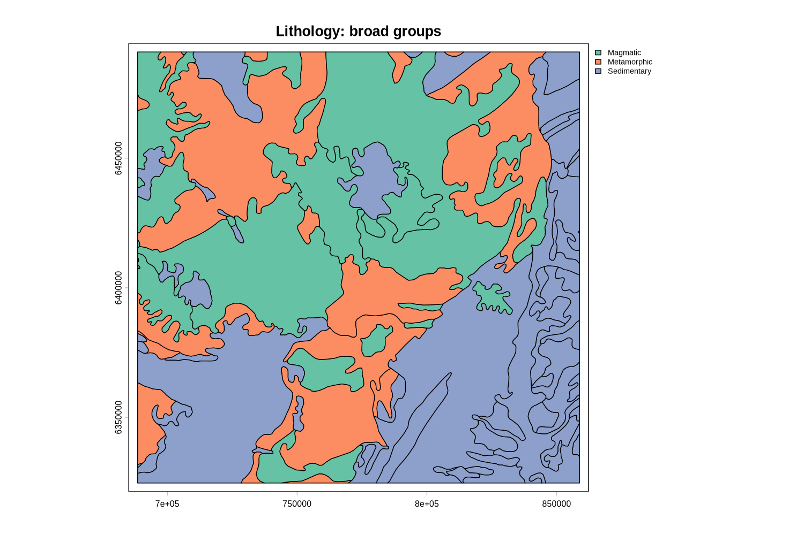
Lithology · DESCR
Detailed rock descriptions, using DESCR.
Code
plot(litho, "DESCR", col = description_palette, main = "Lithology: rock descriptions",
mar = c(3, 4, 3, 11), plg = list(cex = 0.7))
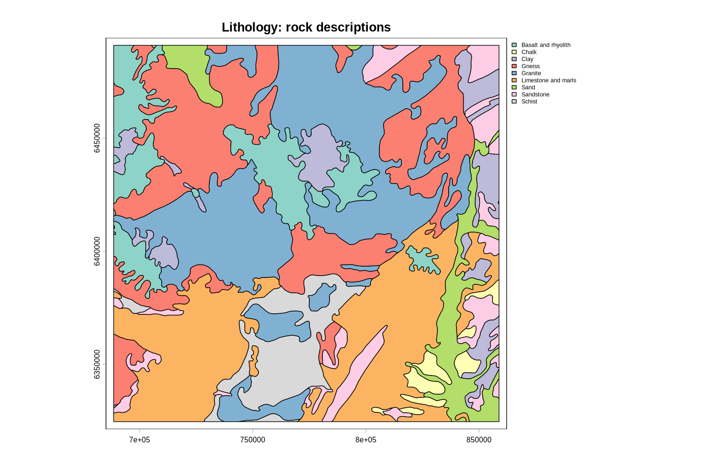
Structures
Blue lines are geological structures; grey polygons are departments.
Code
plot(dept, col = "#e2e6e2", ext = union(ext(struct), ext(dept)),
main = "Geological structures")
lines(struct, col = "#365b8c", lwd = 1)
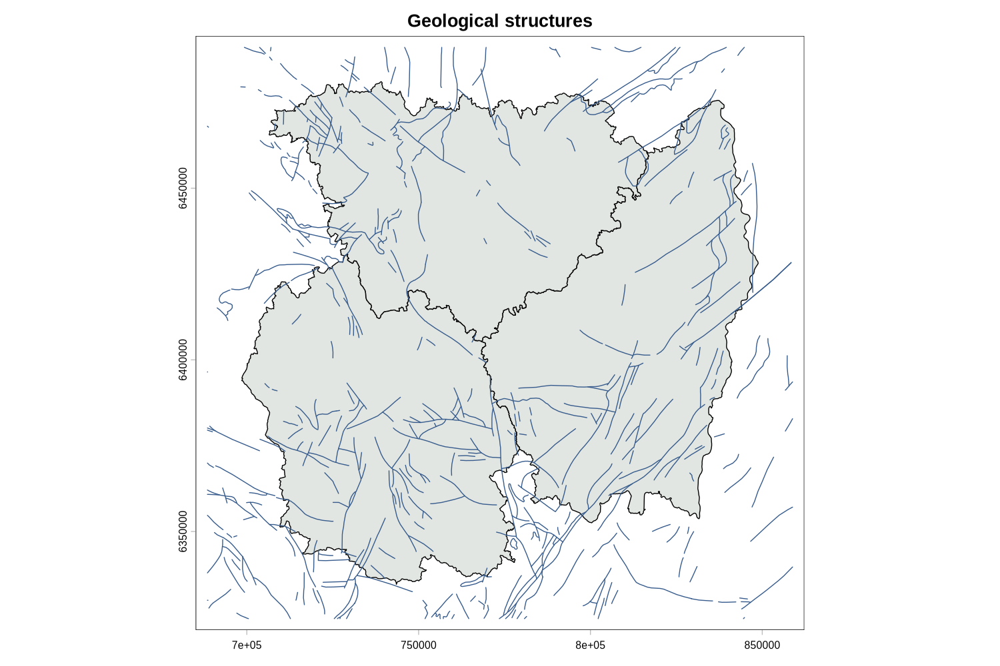
Mines
Brown points are mine locations; grey polygons are departments.
Code
plot(dept, col = "#e2e6e2", ext = union(ext(mines), ext(dept)),
main = "Mine locations in the teaching dataset")
points(mines, pch = 19, col = "#8b4d3f", cex = 0.6)
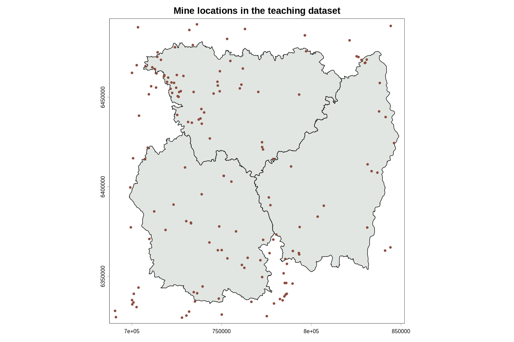
How to read the result. Select a tab and compare the map with its attribute table. Category colours are labels, not a numeric scale. The supplied layers form a teaching dataset; interpret their content at the appropriate source scale.
5.2 · Dissolve polygons by an attribute
Why this step?
aggregate(litho, by = "TYPE") combines polygons belonging to the same broad group. A resulting feature can contain several disconnected parts. Dissolving boundaries changes feature organisation; it is not the same as merely recolouring the source layer.
# Dissolve polygon boundaries by the broad rock-group attribute.
litho_groups <- aggregate(litho, by = "TYPE")
par(mfrow = c(1, 2))
plot(litho, "TYPE", col = type_palette, legend = FALSE,
main = "Source polygons", mar = c(3, 3, 3, 1))
plot(litho_groups, "TYPE", col = type_palette, legend = FALSE,
main = "Dissolved by TYPE", mar = c(3, 3, 3, 1))
par(mfrow = c(1, 1))
c(before = nrow(litho), after = nrow(litho_groups))
as.data.frame(litho_groups)
Why these functions?
aggregate()— Dissolve boundaries between polygons sharing the same broad lithology group.par()— Arrange before-and-after maps side by side, then restore one map per panel.c()— Collect department codes, labels and plotting settings.plot()— Display a spatial layer and its categorical attributes.nrow()— Count spatial features or attribute-match rows.as.data.frame()— Inspect the attribute table separately from its geometry.
Result of running this code in R
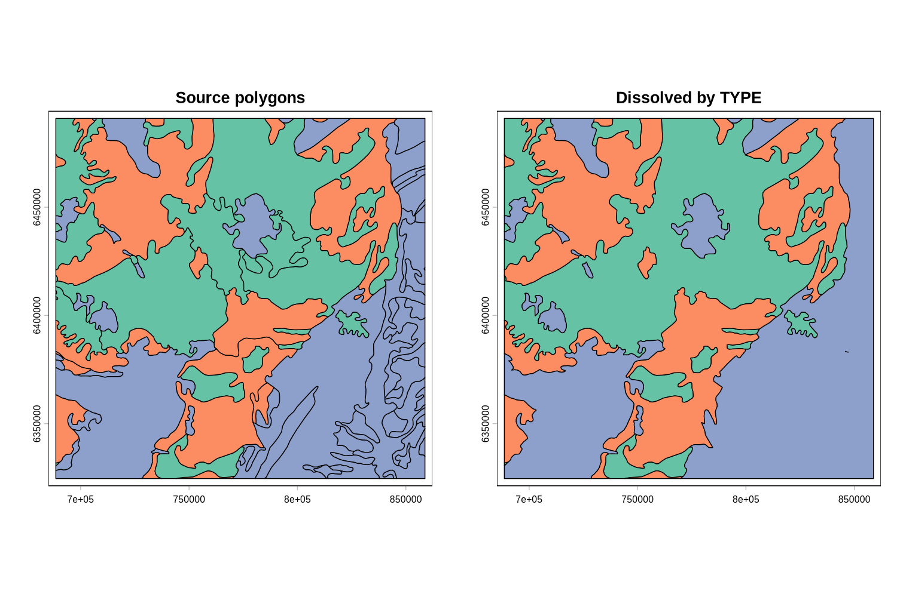
R console output
before after
80 3
TYPE DESCR agg_n
1 Magmatic NA 18
2 Metamorphic NA 15
3 Sedimentary NA 47
How to read the result. The feature count falls from 80 to 3, one per broad group. Compare boundaries and inspect the retained fields: detailed source attributes need not survive a dissolve.
5.2.1 · Compare polygon overlays
Why this step?
Apply six operations to the same ordered pair: lithology first, departments second. Geometric overlays can cut features, combine their attributes or replace geometry. The inputs’ order matters for operations such as erase and cover.
Full code for this comparison
# Compare operations on the same ordered pair of polygon layers.
overlays <- list(
Erase = erase(litho, dept),
Intersect = intersect(litho, dept),
Crop = crop(litho, dept),
Union = union(litho, dept),
Cover = cover(litho, dept),
Symmetric_difference = symdif(litho, dept))
overlay_summary <- data.frame(
operation = names(overlays),
features = vapply(overlays, nrow, numeric(1)),
fields = vapply(overlays, function(x) paste(names(x), collapse = ", "), character(1)))
for (label in names(overlays)) {
result <- overlays[[label]]
plot(result, "DESCR", col = description_palette,
main = label, mar = c(3, 4, 3, 11), plg = list(cex = 0.65))
lines(dept, col = "#333b37", lwd = 1.2)
print(head(as.data.frame(result)))
}
overlay_summary
Why these functions?
list()— Store each overlay result under its operation name.erase()— Subtract department geometry from lithology polygons.intersect()— Keep shared polygon areas and combine the input attributes.crop()— Clip the first polygon layer to the second layer while retaining first-layer attributes.union()— Combine polygon footprints and shared attributes, or combine map extents.cover()— Replace overlapping areas of the first polygon layer with polygons from the second.symdif()— Keep areas belonging to either polygon layer but exclude their shared area.data.frame()— Present feature counts, overlay fields and selected-feature counts as tables.names()— Read operation names or the attribute fields retained by an output.vapply()— Summarise each overlay with a known output type.numeric()— Allocate result vectors and specify numeric output for feature counts.paste()— Combine operation labels or retained field names into readable text.character()— Declare one text result per overlay when summarising retained field names.plot()— Display a spatial layer and its categorical attributes.c()— Collect department codes, labels and plotting settings.lines()— Overlay department boundaries or draw geological line features.print()— Display a sample attribute table for each overlay result.head()— Preview fields and matches before processing the complete table.as.data.frame()— Inspect the attribute table separately from its geometry.
Result of running this code in R
Erase
Subtract the department geometry from the lithology polygons; retain attributes from the lithology input.
Output: 65 features. Fields: TYPE, DESCR.
Code
label <- "Erase"
result <- erase(litho, dept)
plot(result, "DESCR", col = description_palette,
main = label, mar = c(3, 4, 3, 11), plg = list(cex = 0.65))
lines(dept, col = "#333b37", lwd = 1.2)
head(as.data.frame(result))Intersect
Keep shared areas and include attributes from both inputs. Department boundaries can split one lithology feature into several output records.
Output: 52 features. Fields: TYPE, DESCR, code, nom.
Code
label <- "Intersect"
result <- intersect(litho, dept)
plot(result, "DESCR", col = description_palette,
main = label, mar = c(3, 4, 3, 11), plg = list(cex = 0.65))
lines(dept, col = "#333b37", lwd = 1.2)
head(as.data.frame(result))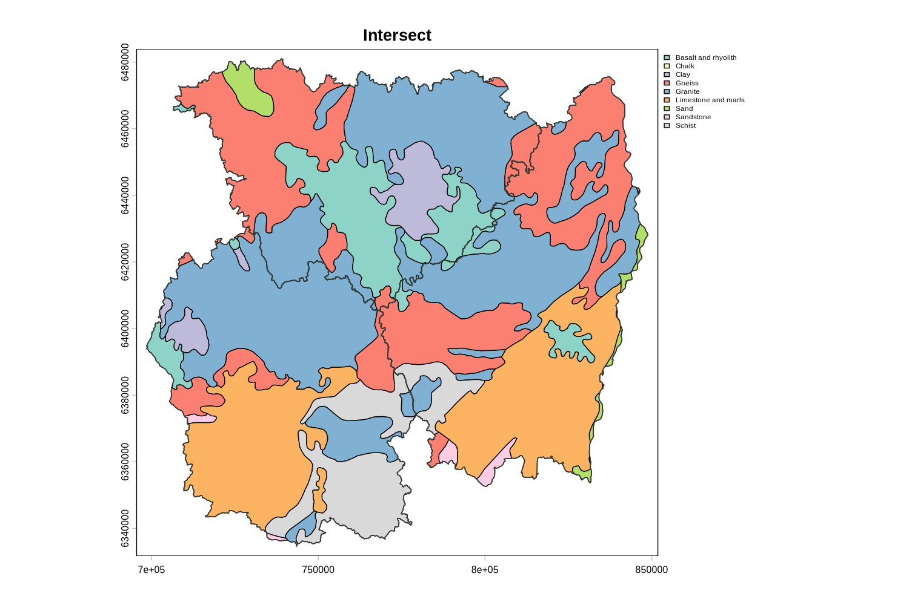
Crop
Crop polygon geometry using the department polygons while retaining lithology attributes; department attributes are not transferred. This vector case differs from rectangular raster cropping.
Output: 39 features. Fields: TYPE, DESCR.
Code
label <- "Crop"
result <- crop(litho, dept)
plot(result, "DESCR", col = description_palette,
main = label, mar = c(3, 4, 3, 11), plg = list(cex = 0.65))
lines(dept, col = "#333b37", lwd = 1.2)
head(as.data.frame(result))Union
Keep both polygon footprints, split overlapping areas and combine attributes where the layers overlap.
Output: 117 features. Fields: TYPE, DESCR, code, nom.
Code
label <- "Union"
result <- union(litho, dept)
plot(result, "DESCR", col = description_palette,
main = label, mar = c(3, 4, 3, 11), plg = list(cex = 0.65))
lines(dept, col = "#333b37", lwd = 1.2)
head(as.data.frame(result))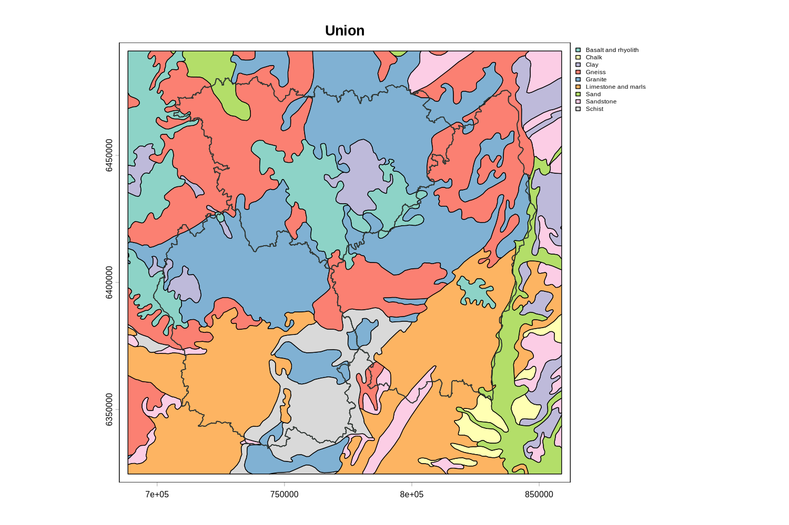
Cover
Replace overlapping lithology geometry with department geometry. The white department interiors here lack a DESCR value on the replacement features; white does not mean those polygons were erased.
Output: 68 features. Fields: TYPE, DESCR, code, nom.
Code
label <- "Cover"
result <- cover(litho, dept)
plot(result, "DESCR", col = description_palette,
main = label, mar = c(3, 4, 3, 11), plg = list(cex = 0.65))
lines(dept, col = "#333b37", lwd = 1.2)
head(as.data.frame(result))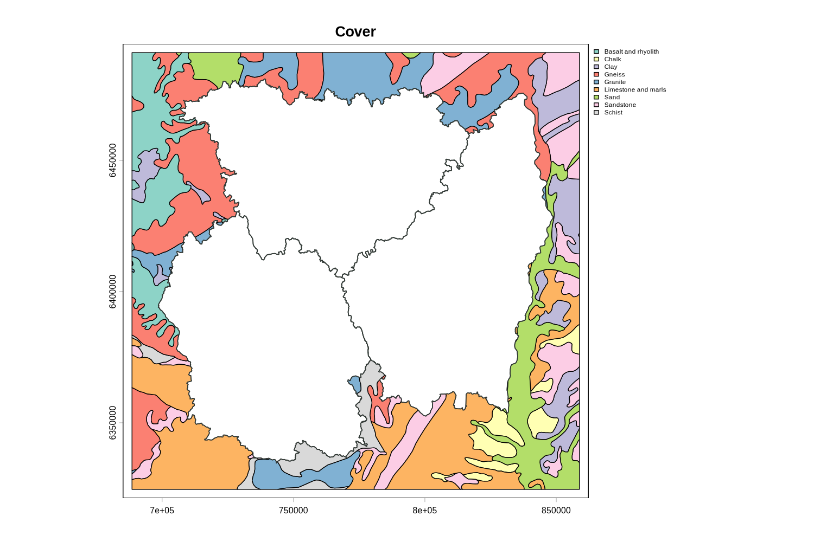
Symmetric difference
Keep portions belonging to either input but remove their shared area. It can resemble erase in this dataset because of the input footprints, but the two operations are not generally interchangeable.
Output: 65 features. Fields: TYPE, DESCR.
Code
label <- "Symmetric_difference"
result <- symdif(litho, dept)
plot(result, "DESCR", col = description_palette,
main = label, mar = c(3, 4, 3, 11), plg = list(cex = 0.65))
lines(dept, col = "#333b37", lwd = 1.2)
head(as.data.frame(result))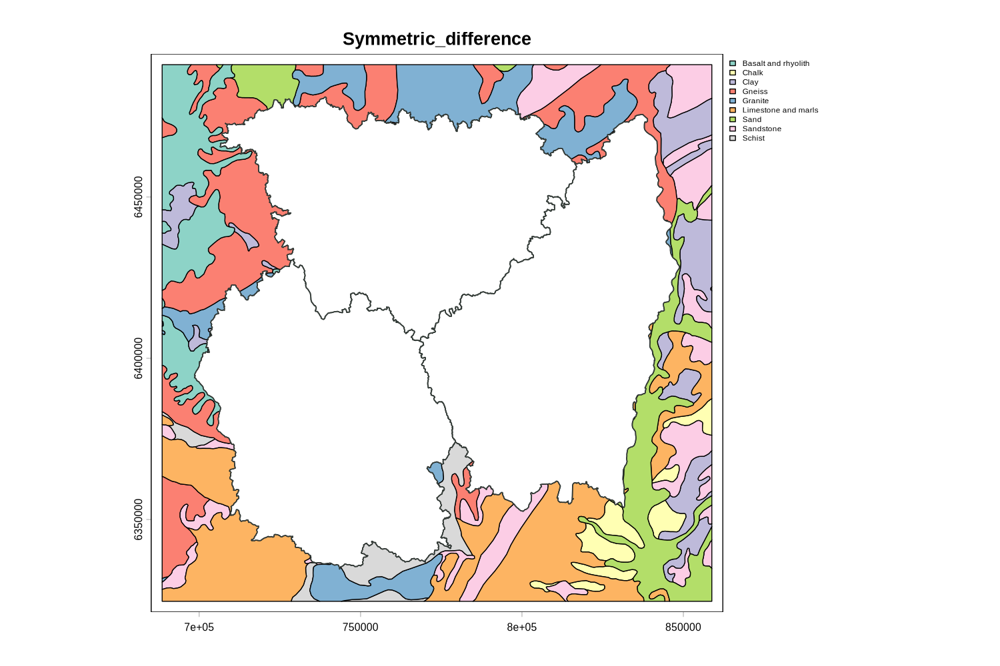
R console output
TYPE DESCR
1 Sedimentary Sandstone
2 Sedimentary Sandstone
3 Sedimentary Clay
4 Magmatic Granite
5 Magmatic Basalt and rhyolith
6 Magmatic Basalt and rhyolith
TYPE DESCR code nom
1 Magmatic Basalt and rhyolith 48 Lozère
2 Sedimentary Clay 48 Lozère
3 Magmatic Basalt and rhyolith 48 Lozère
4 Magmatic Granite 48 Lozère
5 Magmatic Granite 43 Haute-Loire
6 Metamorphic Gneiss 48 Lozère
TYPE DESCR
1 Magmatic Basalt and rhyolith
2 Sedimentary Clay
3 Magmatic Basalt and rhyolith
4 Magmatic Granite
5 Metamorphic Gneiss
6 Magmatic Basalt and rhyolith
TYPE DESCR code nom
1 Sedimentary Sandstone <NA> <NA>
2 Sedimentary Sandstone <NA> <NA>
3 Sedimentary Clay <NA> <NA>
4 Magmatic Granite <NA> <NA>
5 Magmatic Basalt and rhyolith <NA> <NA>
6 Magmatic Basalt and rhyolith <NA> <NA>
TYPE DESCR code nom
1 Sedimentary Sandstone <NA> <NA>
2 Sedimentary Sandstone <NA> <NA>
3 Sedimentary Clay <NA> <NA>
4 Magmatic Granite <NA> <NA>
5 Magmatic Basalt and rhyolith <NA> <NA>
6 Magmatic Basalt and rhyolith <NA> <NA>
TYPE DESCR
1 Sedimentary Sandstone
2 Sedimentary Sandstone
3 Sedimentary Clay
4 Magmatic Granite
5 Magmatic Basalt and rhyolith
6 Magmatic Basalt and rhyolith
operation features fields
Erase Erase 65 TYPE, DESCR
Intersect Intersect 52 TYPE, DESCR, code, nom
Crop Crop 39 TYPE, DESCR
Union Union 117 TYPE, DESCR, code, nom
Cover Cover 68 TYPE, DESCR, code, nom
Symmetric_difference Symmetric_difference 65 TYPE, DESCR
How to read the result. Select each operation and inspect both its map and its output fields. A feature count is not an area measurement. The dark outlines mark the department boundaries for reference.
5.3 · Split multipart volcanic features
Why this step?
Select the rock description Basalt and rhyolith, then use disagg() to split multipart geometries. A feature record and a continuous polygon component are not necessarily the same thing. The labels and colours here are feature identifiers.
# Split multipart volcanic polygons into separate features.
volcanic_source <- litho[litho$DESCR == "Basalt and rhyolith", ]
volcanics <- disagg(volcanic_source)
par(mfrow = c(1, 2))
plot(volcanic_source, col = rainbow(nrow(volcanic_source)),
main = "Multipart features", mar = c(3, 3, 3, 1))
text(volcanic_source, labels = seq_len(nrow(volcanic_source)), cex = 0.8)
plot(volcanics, col = rainbow(nrow(volcanics)),
main = "Singlepart features", mar = c(3, 3, 3, 1))
text(volcanics, labels = seq_len(nrow(volcanics)), cex = 0.8)
par(mfrow = c(1, 1))
c(before = nrow(volcanic_source), after = nrow(volcanics))
Why these functions?
disagg()— Split multipart volcanic polygons into separate feature records.par()— Arrange before-and-after maps side by side, then restore one map per panel.c()— Collect department codes, labels and plotting settings.plot()— Display a spatial layer and its categorical attributes.rainbow()— Give separate feature IDs distinct display colours in the disaggregation exercise.nrow()— Count spatial features or attribute-match rows.text()— Label individual geometries in the multipart-to-singlepart comparison.seq_len()— Create stable row identifiers and feature-number labels.
Result of running this code in R
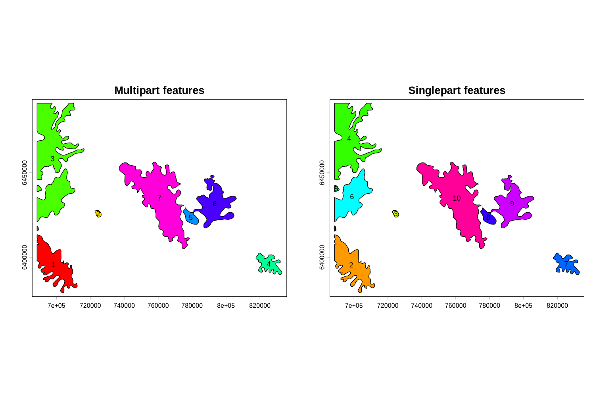
R console output
before after
7 10
How to read the result. Disconnected parts that previously belonged to one record can become separate features. The arbitrary rainbow colours distinguish IDs; they do not describe different rock types.
5.3.1 · Select polygons by spatial relationship
Why this step?
is.related(x, y, relation) returns one logical value per feature of x: TRUE if it satisfies the predicate with at least one feature of y. Selecting x with this logical vector retains entire geometries; it does not clip them to department boundaries.
Full code for this comparison
# Every predicate is tested against ANY individual department feature.
relations <- c("intersects", "touches", "crosses", "overlaps", "within",
"contains", "covers", "coveredby", "disjoint")
# Shared plotting helper: selected features are gold; other features are blue.
show_selection <- function(x, selected, label) {
plot(dept, col = "#e2e6e2", ext = union(ext(x), ext(dept)),
main = paste0(label, "\n", sum(selected), " / ", nrow(x), " selected"),
cex.main = 0.95, mar = c(3, 4, 5, 2))
if (geomtype(x) == "polygons") {
polys(x, col = "#3576a5", border = "#274b61")
if (any(selected)) polys(x[selected, ], col = "#f6c344", border = "#795c1d")
} else if (geomtype(x) == "lines") {
lines(x, col = "#3576a5", lwd = 1)
if (any(selected)) lines(x[selected, ], col = "#f6c344", lwd = 2)
} else {
points(x, col = "#3576a5", pch = 19, cex = 0.6)
if (any(selected)) points(x[selected, ], col = "#f6c344", pch = 19, cex = 0.8)
}
lines(dept, col = "#39473d", lwd = 0.7)
add_legend("topright", legend = c("Selected", "Not selected", "Departments"),
fill = c("#f6c344", "#3576a5", "#e2e6e2"),
bg = "white", cex = 0.65, inset = 0.01)
}
polygon_counts <- numeric(length(relations))
for (i in seq_along(relations)) {
relation <- relations[i]
selected <- is.related(volcanics, dept, relation = relation)
polygon_counts[i] <- sum(selected)
show_selection(volcanics, selected, paste("Polygons:", relation))
}
data.frame(relation = relations, selected = polygon_counts)
Why these functions?
c()— Collect department codes, labels and plotting settings.plot()— Display a spatial layer and its categorical attributes.union()— Combine polygon footprints and shared attributes, or combine map extents.ext()— Read layer bounds so selected and non-selected features share a complete map frame.paste0()— Build a map title including the number of selected features.sum()— Count selected features or missing attribute values.nrow()— Count spatial features or attribute-match rows.geomtype()— Select the appropriate polygon, line or point drawing method in the shared helper.polys()— Draw source polygons and highlight selected polygons without clipping them.any()— Draw a selected subset only if at least one feature satisfies the predicate.lines()— Overlay department boundaries or draw geological line features.points()— Draw all mine locations and highlight the selected points.add_legend()— Add a readable colour key to the spatial map using its plotted extent.numeric()— Allocate result vectors and specify numeric output for feature counts.length()— Count groups or predicates to size the result vectors.seq_along()— Visit each predicate in a fixed reproducible order.is.related()— Test whether each feature has a specified relationship with any department.show_selection()— Draw the same map frame and colour key for polygon, line and point selections.paste()— Combine operation labels or retained field names into readable text.data.frame()— Present feature counts, overlay fields and selected-feature counts as tables.
Result of running this code in R
intersects
The features share at least one point, including boundary contact.
Selected: 7 of 10 features.
Code
relation <- "intersects"
selected <- is.related(volcanics, dept, relation = relation)
show_selection(volcanics, selected, paste("Polygons:", relation))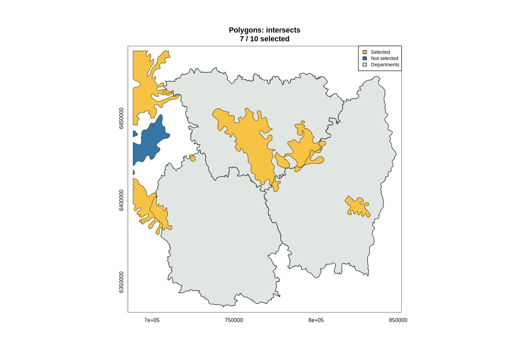
touches
Their boundaries make contact without an overlap of their interiors.
Selected: 0 of 10 features.
Code
relation <- "touches"
selected <- is.related(volcanics, dept, relation = relation)
show_selection(volcanics, selected, paste("Polygons:", relation))crosses
The geometries pass across one another under the dimension-specific topological definition; this is relevant here to lines crossing polygon boundaries.
Selected: 0 of 10 features.
Code
relation <- "crosses"
selected <- is.related(volcanics, dept, relation = relation)
show_selection(volcanics, selected, paste("Polygons:", relation))overlaps
Same-dimension features share part of their interiors, without one containing the whole other feature.
Selected: 6 of 10 features.
Code
relation <- "overlaps"
selected <- is.related(volcanics, dept, relation = relation)
show_selection(volcanics, selected, paste("Polygons:", relation))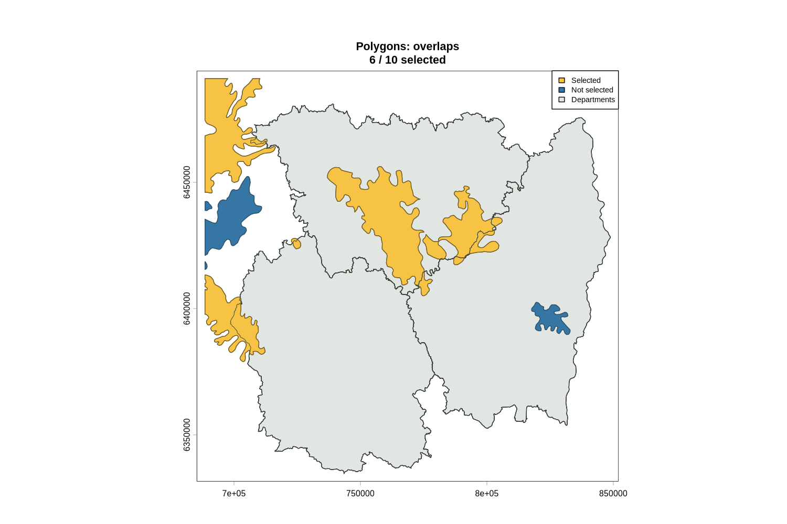
within
The x feature lies within a y feature and their interiors meet. A point on a polygon boundary is not within its interior.
Selected: 1 of 10 features.
Code
relation <- "within"
selected <- is.related(volcanics, dept, relation = relation)
show_selection(volcanics, selected, paste("Polygons:", relation))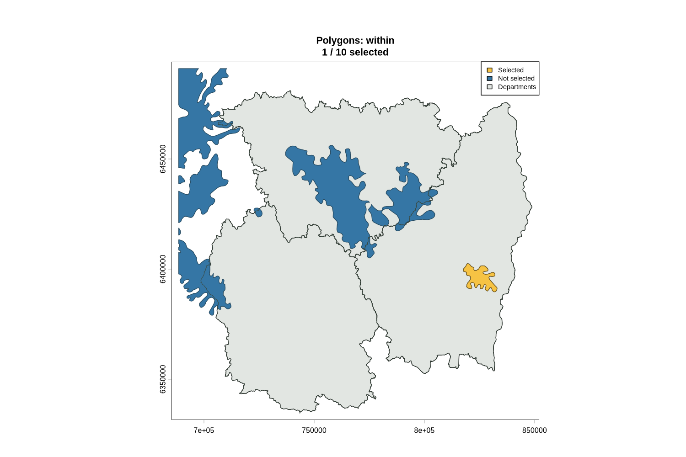
contains
Inverse direction of within: x contains y. Here x is the individual volcanic polygon, line or point, not the department.
Selected: 0 of 10 features.
Code
relation <- "contains"
selected <- is.related(volcanics, dept, relation = relation)
show_selection(volcanics, selected, paste("Polygons:", relation))covers
Every point of y belongs to x, including boundaries. Note the direction: the x feature must cover a department.
Selected: 0 of 10 features.
Code
relation <- "covers"
selected <- is.related(volcanics, dept, relation = relation)
show_selection(volcanics, selected, paste("Polygons:", relation))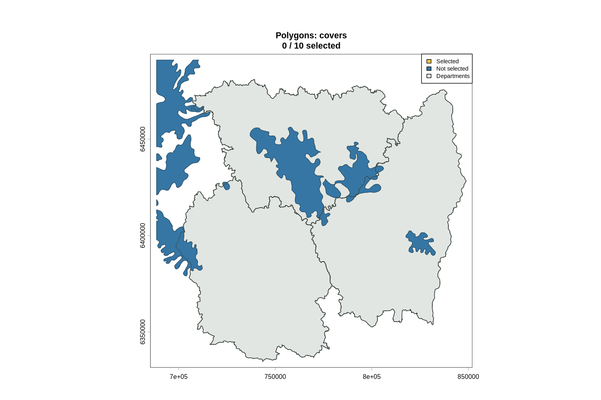
coveredby
Every point of x belongs to y, including its boundary. This differs from within for some boundary cases.
Selected: 1 of 10 features.
Code
relation <- "coveredby"
selected <- is.related(volcanics, dept, relation = relation)
show_selection(volcanics, selected, paste("Polygons:", relation))disjoint
The pair shares no point. With multiple department features, TRUE means disjoint from at least one of them.
Selected: 10 of 10 features.
Code
relation <- "disjoint"
selected <- is.related(volcanics, dept, relation = relation)
show_selection(volcanics, selected, paste("Polygons:", relation))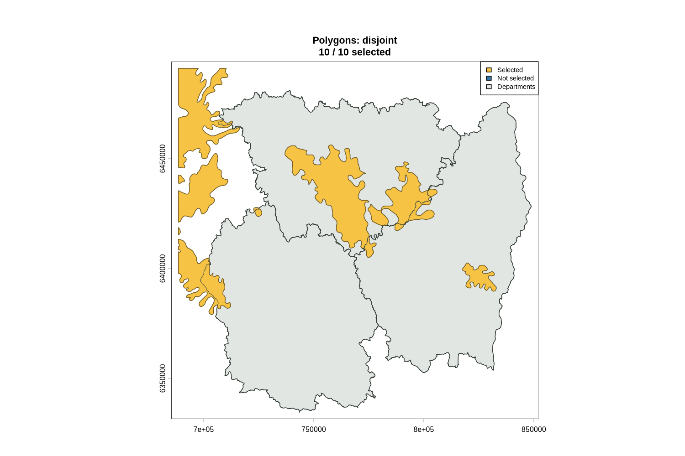
R console output
relation selected 1 intersects 7 2 touches 0 3 crosses 0 4 overlaps 6 5 within 1 6 contains 0 7 covers 0 8 coveredby 1 9 disjoint 10
How to read the result. Gold features satisfy the selected predicate; blue ones do not; grey is the department background. A result of zero selected features is valid. A polygon crossing a department boundary can intersect it without being within it.
5.3.2 · Select lines relative to polygons
Why this step?
Repeat the predicates with geological line features. The dimension of the tested geometry matters: a line can cross a polygon boundary, whereas overlaps is a same-dimension relationship. The highlighted output is still a set of complete input lines.
Full code for this comparison
# Select whole line features; do not clip their geometry.
line_counts <- numeric(length(relations))
for (i in seq_along(relations)) {
relation <- relations[i]
selected <- is.related(struct, dept, relation = relation)
line_counts[i] <- sum(selected)
show_selection(struct, selected, paste("Lines:", relation))
}
data.frame(relation = relations, selected = line_counts)
Why these functions?
numeric()— Allocate result vectors and specify numeric output for feature counts.length()— Count groups or predicates to size the result vectors.seq_along()— Visit each predicate in a fixed reproducible order.is.related()— Test whether each feature has a specified relationship with any department.sum()— Count selected features or missing attribute values.show_selection()— Draw the same map frame and colour key for polygon, line and point selections.paste()— Combine operation labels or retained field names into readable text.data.frame()— Present feature counts, overlay fields and selected-feature counts as tables.
Result of running this code in R
intersects
The features share at least one point, including boundary contact.
Selected: 303 of 501 features.
Code
relation <- "intersects"
selected <- is.related(struct, dept, relation = relation)
show_selection(struct, selected, paste("Lines:", relation))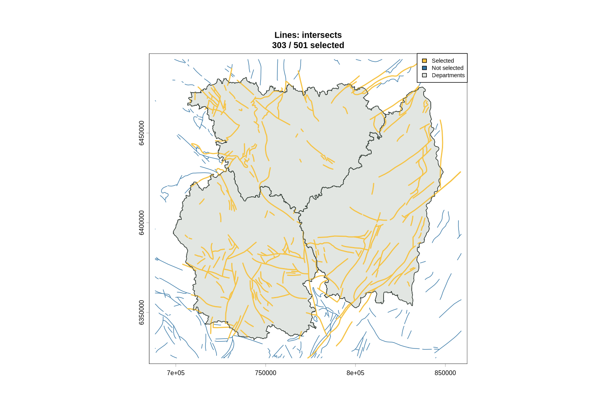
touches
Their boundaries make contact without an overlap of their interiors.
Selected: 0 of 501 features.
Code
relation <- "touches"
selected <- is.related(struct, dept, relation = relation)
show_selection(struct, selected, paste("Lines:", relation))crosses
The geometries pass across one another under the dimension-specific topological definition; this is relevant here to lines crossing polygon boundaries.
Selected: 56 of 501 features.
Code
relation <- "crosses"
selected <- is.related(struct, dept, relation = relation)
show_selection(struct, selected, paste("Lines:", relation))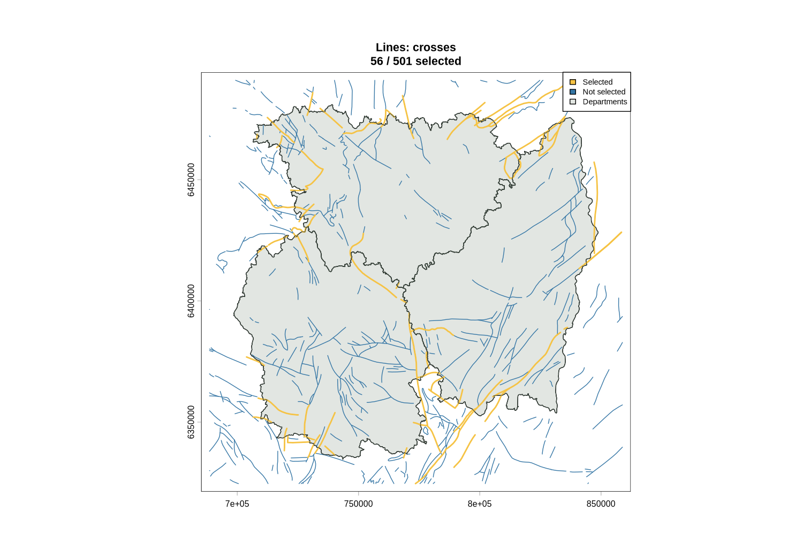
overlaps
Same-dimension features share part of their interiors, without one containing the whole other feature.
Selected: 0 of 501 features.
Code
relation <- "overlaps"
selected <- is.related(struct, dept, relation = relation)
show_selection(struct, selected, paste("Lines:", relation))within
The x feature lies within a y feature and their interiors meet. A point on a polygon boundary is not within its interior.
Selected: 247 of 501 features.
Code
relation <- "within"
selected <- is.related(struct, dept, relation = relation)
show_selection(struct, selected, paste("Lines:", relation))contains
Inverse direction of within: x contains y. Here x is the individual volcanic polygon, line or point, not the department.
Selected: 0 of 501 features.
Code
relation <- "contains"
selected <- is.related(struct, dept, relation = relation)
show_selection(struct, selected, paste("Lines:", relation))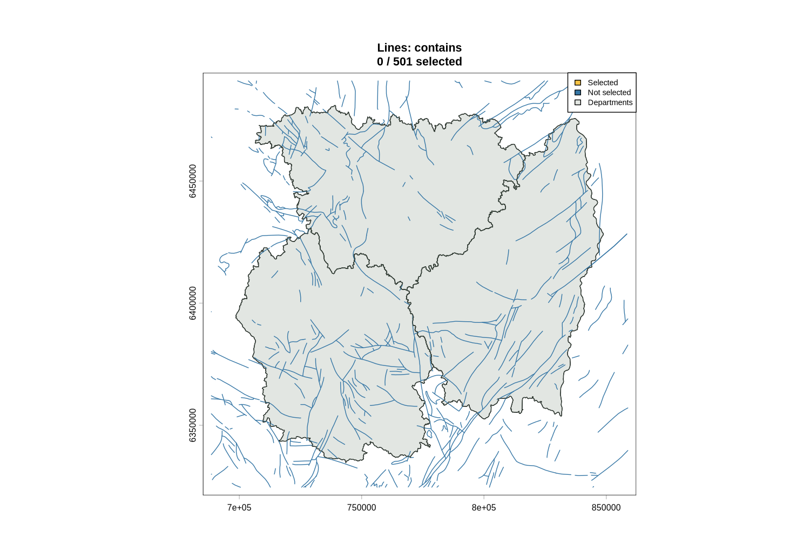
covers
Every point of y belongs to x, including boundaries. Note the direction: the x feature must cover a department.
Selected: 0 of 501 features.
Code
relation <- "covers"
selected <- is.related(struct, dept, relation = relation)
show_selection(struct, selected, paste("Lines:", relation))coveredby
Every point of x belongs to y, including its boundary. This differs from within for some boundary cases.
Selected: 247 of 501 features.
Code
relation <- "coveredby"
selected <- is.related(struct, dept, relation = relation)
show_selection(struct, selected, paste("Lines:", relation))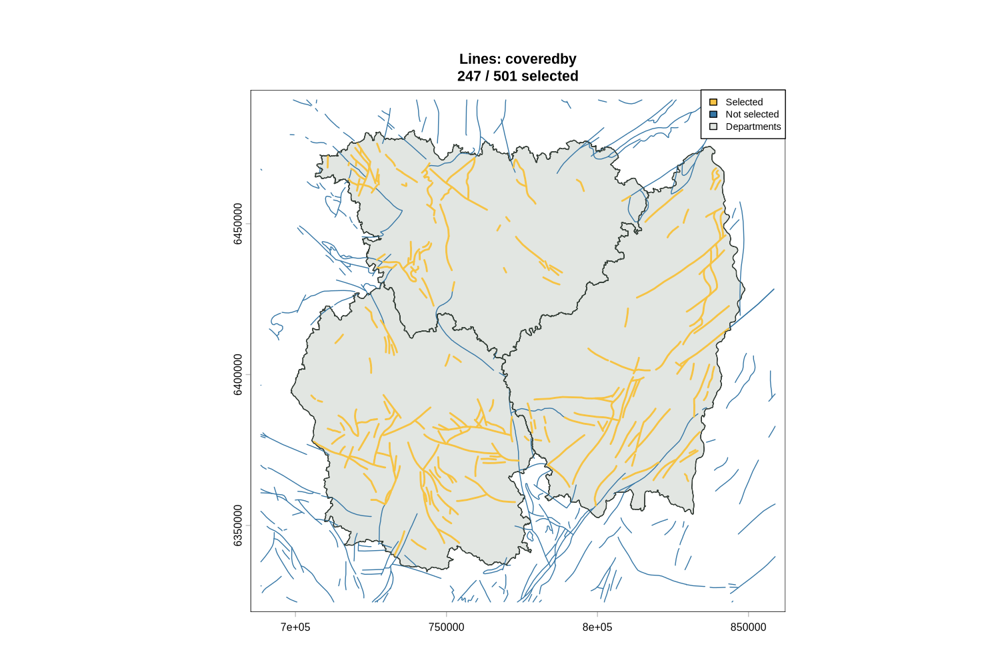
disjoint
The pair shares no point. With multiple department features, TRUE means disjoint from at least one of them.
Selected: 501 of 501 features.
Code
relation <- "disjoint"
selected <- is.related(struct, dept, relation = relation)
show_selection(struct, selected, paste("Lines:", relation))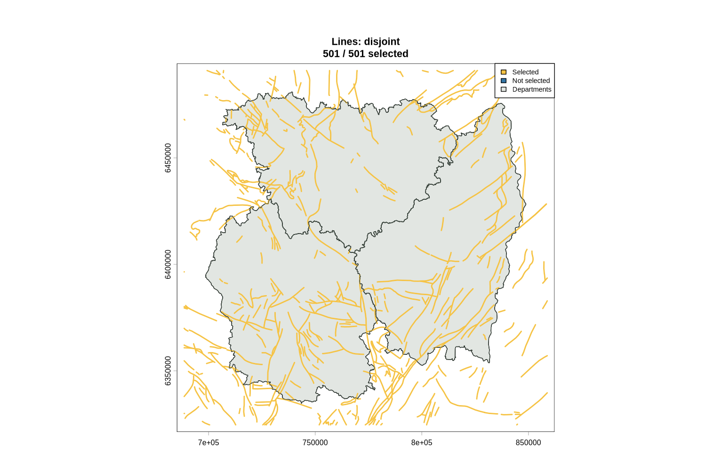
R console output
relation selected 1 intersects 303 2 touches 0 3 crosses 56 4 overlaps 0 5 within 247 6 contains 0 7 covers 0 8 coveredby 247 9 disjoint 501
How to read the result. Compare intersects, crosses and within. A selected line may extend outside a department. Use a clipping or intersection operation if you need only its inside segment.
5.3.3 · Select points relative to polygons
Why this step?
A point has dimension zero. Its relationship to a polygon differs from that of a line or another polygon. A point on a polygon boundary may be covered by the polygon without being within its interior.
Full code for this comparison
# Repeat the same relationship tests with zero-dimensional points.
point_counts <- numeric(length(relations))
for (i in seq_along(relations)) {
relation <- relations[i]
selected <- is.related(mines, dept, relation = relation)
point_counts[i] <- sum(selected)
show_selection(mines, selected, paste("Points:", relation))
}
data.frame(relation = relations, selected = point_counts)
Why these functions?
numeric()— Allocate result vectors and specify numeric output for feature counts.length()— Count groups or predicates to size the result vectors.seq_along()— Visit each predicate in a fixed reproducible order.is.related()— Test whether each feature has a specified relationship with any department.sum()— Count selected features or missing attribute values.show_selection()— Draw the same map frame and colour key for polygon, line and point selections.paste()— Combine operation labels or retained field names into readable text.data.frame()— Present feature counts, overlay fields and selected-feature counts as tables.
Result of running this code in R
intersects
The features share at least one point, including boundary contact.
Selected: 93 of 153 features.
Code
relation <- "intersects"
selected <- is.related(mines, dept, relation = relation)
show_selection(mines, selected, paste("Points:", relation))touches
Their boundaries make contact without an overlap of their interiors.
Selected: 0 of 153 features.
Code
relation <- "touches"
selected <- is.related(mines, dept, relation = relation)
show_selection(mines, selected, paste("Points:", relation))crosses
The geometries pass across one another under the dimension-specific topological definition; this is relevant here to lines crossing polygon boundaries.
Selected: 0 of 153 features.
Code
relation <- "crosses"
selected <- is.related(mines, dept, relation = relation)
show_selection(mines, selected, paste("Points:", relation))overlaps
Same-dimension features share part of their interiors, without one containing the whole other feature.
Selected: 0 of 153 features.
Code
relation <- "overlaps"
selected <- is.related(mines, dept, relation = relation)
show_selection(mines, selected, paste("Points:", relation))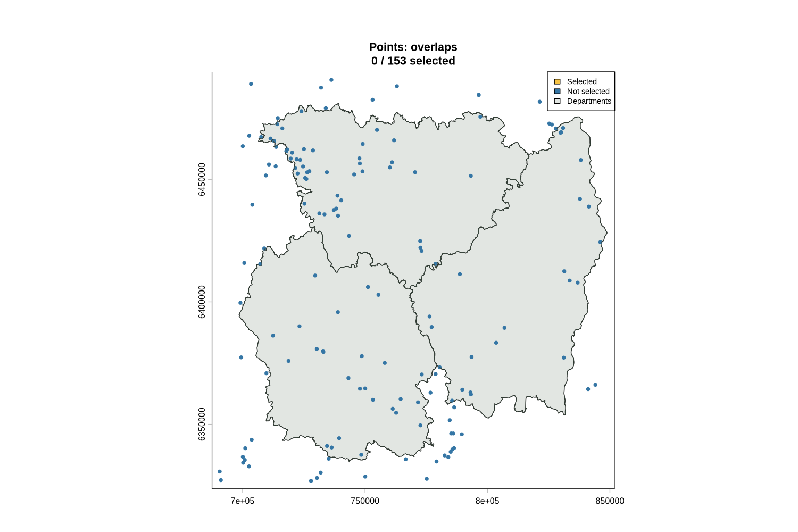
within
The x feature lies within a y feature and their interiors meet. A point on a polygon boundary is not within its interior.
Selected: 93 of 153 features.
Code
relation <- "within"
selected <- is.related(mines, dept, relation = relation)
show_selection(mines, selected, paste("Points:", relation))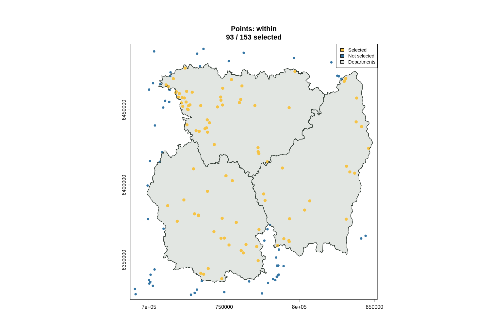
contains
Inverse direction of within: x contains y. Here x is the individual volcanic polygon, line or point, not the department.
Selected: 0 of 153 features.
Code
relation <- "contains"
selected <- is.related(mines, dept, relation = relation)
show_selection(mines, selected, paste("Points:", relation))covers
Every point of y belongs to x, including boundaries. Note the direction: the x feature must cover a department.
Selected: 0 of 153 features.
Code
relation <- "covers"
selected <- is.related(mines, dept, relation = relation)
show_selection(mines, selected, paste("Points:", relation))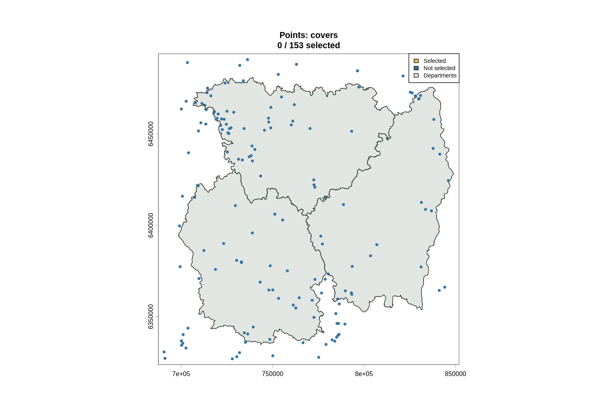
coveredby
Every point of x belongs to y, including its boundary. This differs from within for some boundary cases.
Selected: 93 of 153 features.
Code
relation <- "coveredby"
selected <- is.related(mines, dept, relation = relation)
show_selection(mines, selected, paste("Points:", relation))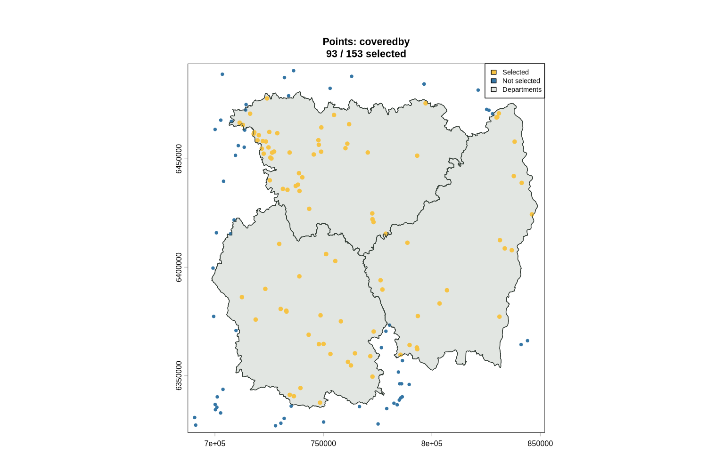
disjoint
The pair shares no point. With multiple department features, TRUE means disjoint from at least one of them.
Selected: 153 of 153 features.
Code
relation <- "disjoint"
selected <- is.related(mines, dept, relation = relation)
show_selection(mines, selected, paste("Points:", relation))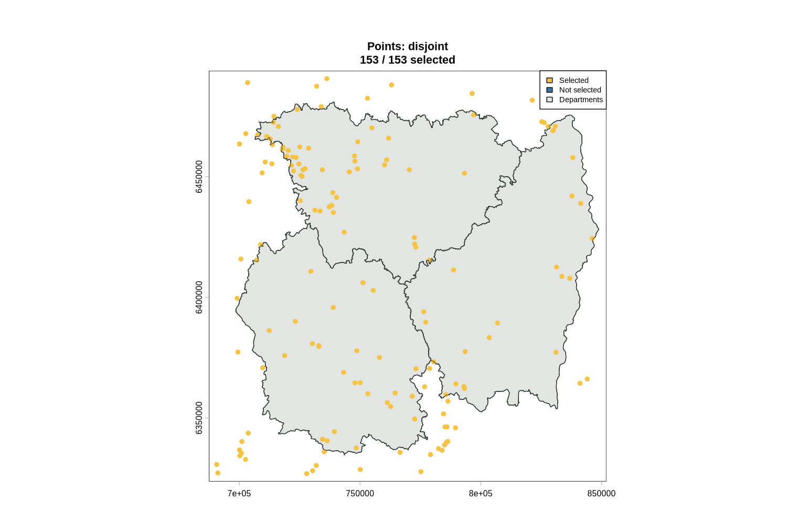
R console output
relation selected 1 intersects 93 2 touches 0 3 crosses 0 4 overlaps 0 5 within 93 6 contains 0 7 covers 0 8 coveredby 93 9 disjoint 153
How to read the result. Here intersects and within select the same 93 mine points because these data contain no point-on-boundary case for these department polygons. Do not treat that agreement as a universal identity between the predicates.
Selected counts: the same predicates, different geometry dimensions
| Predicate | Polygons (10) | Lines (501) | Points (153) |
|---|---|---|---|
| intersects | 7 | 303 | 93 |
| touches | 0 | 0 | 0 |
| crosses | 0 | 56 | 0 |
| overlaps | 6 | 0 | 0 |
| within | 1 | 247 | 93 |
| contains | 0 | 0 | 0 |
| covers | 0 | 0 | 0 |
| coveredby | 1 | 247 | 93 |
| disjoint | 10 | 501 | 153 |
Polygon, line and point geometries have dimensions 2, 1 and 0. A topological predicate can therefore be meaningful for one pair of geometry types and return no matches for another. The disjoint row uses an any department test; the next comparison explains why that matters.
5.3.4 · Disjoint from any is not outside all
Why this step?
With three departments, a point located in one department can still be disjoint from another. Because is.related() asks whether any pair satisfies the predicate, the disjoint test does not identify the complement of the combined study area.
Full code for this comparison
# "Disjoint from any department" is not "outside all departments".
any_disjoint <- is.related(mines, dept, relation = "disjoint")
outside_all <- !is.related(mines, dept, relation = "intersects")
show_selection(mines, any_disjoint, "Disjoint from at least one department")
show_selection(mines, outside_all, "Outside every department")
c(disjoint_from_any = sum(any_disjoint), outside_all = sum(outside_all))
Why these functions?
is.related()— Test whether each feature has a specified relationship with any department.show_selection()— Draw the same map frame and colour key for polygon, line and point selections.c()— Collect department codes, labels and plotting settings.sum()— Count selected features or missing attribute values.
Result of running this code in R
Disjoint from any department
A point can satisfy this relation with one department even if it lies inside a different one.
Code
any_disjoint <- is.related(mines, dept, relation = "disjoint")
show_selection(mines, any_disjoint, "Disjoint from at least one department")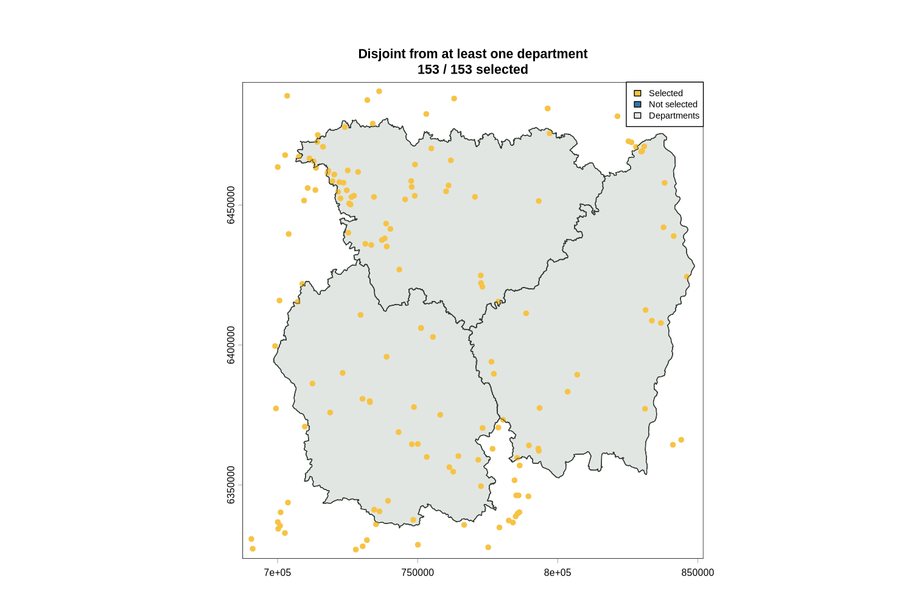
Outside all departments
Negate intersects to ask whether the point has no intersection with any department.
Code
outside_all <- !is.related(mines, dept, relation = "intersects")
show_selection(mines, outside_all, "Outside every department")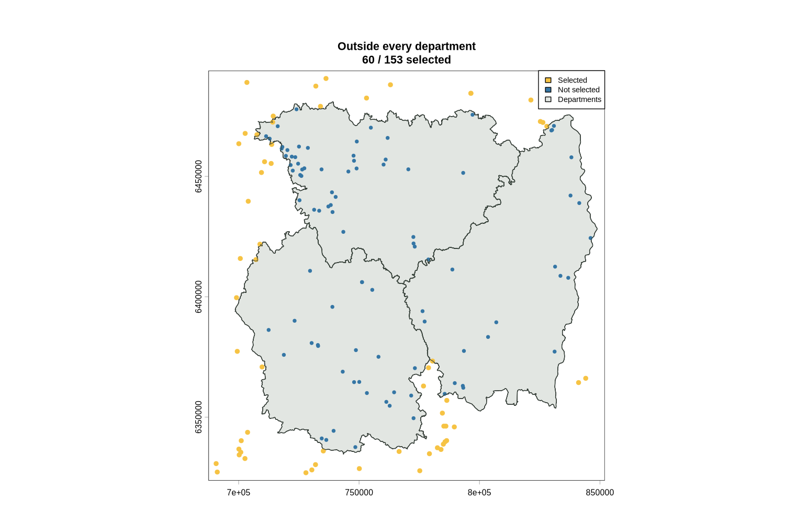
R console output
disjoint_from_any outside_all
153 60
How to read the result. Compare the two tabs. The any-disjoint test selects all 153 points. Negating intersects selects the 60 points outside every department. This follows from the quantifier in the question, not an error in the software.
5.4 · Attach department attributes to the points
Why this step?
extract(dept, mines) returns polygon attributes at point locations. Its id.y identifies the point row. Check for repeated matches and explicitly match those IDs to the original point IDs before using cbind. The checks prevent blindly binding an ambiguous or reordered table.
# Transfer department attributes by point location, with an explicit ID check.
dept_hits <- extract(dept, mines)
stopifnot(nrow(dept_hits) == nrow(mines), !anyDuplicated(dept_hits$id.y))
dept_values <- dept_hits[match(mines$point_id, dept_hits$id.y), c("code", "nom")]
mines_joined <- cbind(mines, dept_values)
head(dept_hits)
plot(mines_joined, "nom", pch = 19, cex = 0.8,
main = "Mine locations by department", mar = c(3, 4, 3, 10), plg = list(cex = 0.8))
lines(dept, col = "#39473d")
unmatched <- is.na(mines_joined$nom)
if (any(unmatched)) points(mines_joined[unmatched, ],
col = "#68746c", pch = 1, cex = 0.8)
add_legend("bottomleft", legend = "No department match", pch = 1,
col = "#68746c", bty = "n", cex = 0.7)
table(mines_joined$nom, useNA = "ifany")
Why these functions?
extract()— Retrieve polygon attributes at mine-point locations.stopifnot()— Stop if a CRS, identifier, feature-count or geometry-preservation check fails.nrow()— Count spatial features or attribute-match rows.anyDuplicated()— Detect multiple polygon matches for a point before attaching attributes.match()— Reorder extracted rows to the original point identifiers before column binding.c()— Collect department codes, labels and plotting settings.cbind()— Attach a checked, correctly ordered attribute table to a spatial point layer.head()— Preview fields and matches before processing the complete table.plot()— Display a spatial layer and its categorical attributes.list()— Store each overlay result under its operation name.lines()— Overlay department boundaries or draw geological line features.is.na()— Count mine points with missing contextual attributes after the join.any()— Draw a selected subset only if at least one feature satisfies the predicate.points()— Draw all mine locations and highlight the selected points.add_legend()— Add a readable colour key to the spatial map using its plotted extent.table()— Summarise mine counts by department or lithology, including missing matches.
Result of running this code in R
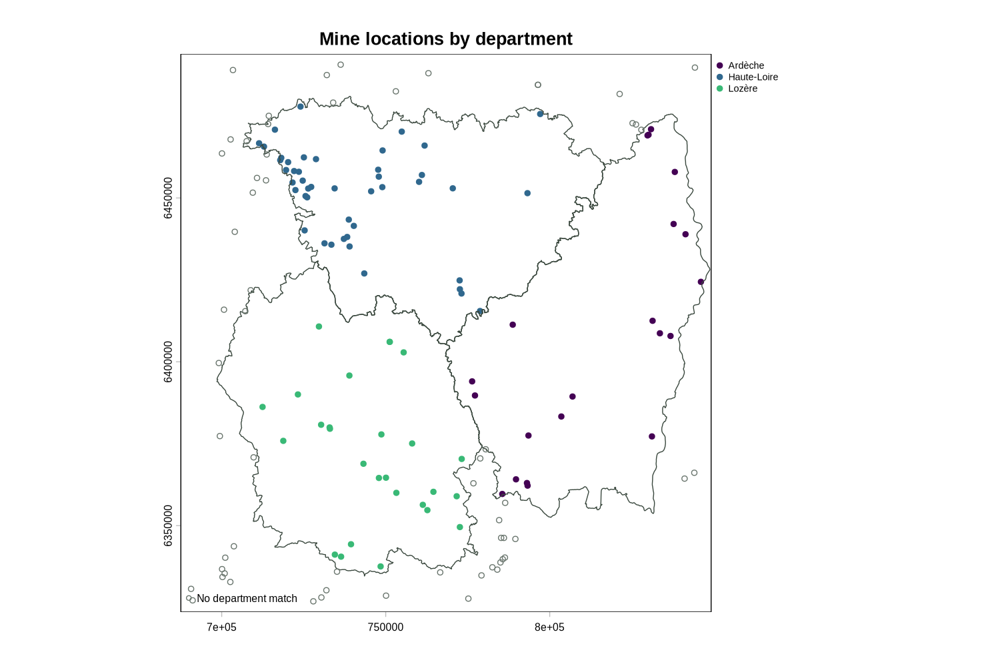
R console output
id.y code nom
1 1 07 Ardèche
2 2 <NA> <NA>
3 3 <NA> <NA>
4 4 48 Lozère
5 5 48 Lozère
6 6 48 Lozère
Ardèche Haute-Loire Lozère <NA>
21 45 27 60
How to read the result. The point count remains 153. Grey open circles mark unmatched points. Sixty points have no matching department in the three-department selection, so their department fields are NA. This means no match in that layer, not necessarily an unknown administrative location.
5.4.1 · Add lithological context
Why this step?
Repeat the checked extraction for the lithology polygons and attach TYPE and DESCR. The geometry remains that of the mine points; only their attribute table is enriched. If a point has multiple polygon matches, stop and decide how that ambiguity should be represented.
# Transfer lithological attributes using the same checked point identifiers.
litho_hits <- extract(litho, mines)
stopifnot(nrow(litho_hits) == nrow(mines), !anyDuplicated(litho_hits$id.y))
litho_values <- litho_hits[match(mines$point_id, litho_hits$id.y), c("TYPE", "DESCR")]
mines_joined <- cbind(mines_joined, litho_values)
head(litho_hits)
plot(mines_joined, "TYPE", col = type_palette, pch = 19, cex = 0.8,
main = "Mine locations by broad lithology", mar = c(3, 4, 3, 10), plg = list(cex = 0.8))
lines(litho_groups, col = "#39473d")
table(mines_joined$TYPE, useNA = "ifany")
Why these functions?
extract()— Retrieve polygon attributes at mine-point locations.stopifnot()— Stop if a CRS, identifier, feature-count or geometry-preservation check fails.nrow()— Count spatial features or attribute-match rows.anyDuplicated()— Detect multiple polygon matches for a point before attaching attributes.match()— Reorder extracted rows to the original point identifiers before column binding.c()— Collect department codes, labels and plotting settings.cbind()— Attach a checked, correctly ordered attribute table to a spatial point layer.head()— Preview fields and matches before processing the complete table.plot()— Display a spatial layer and its categorical attributes.list()— Store each overlay result under its operation name.lines()— Overlay department boundaries or draw geological line features.table()— Summarise mine counts by department or lithology, including missing matches.
Result of running this code in R
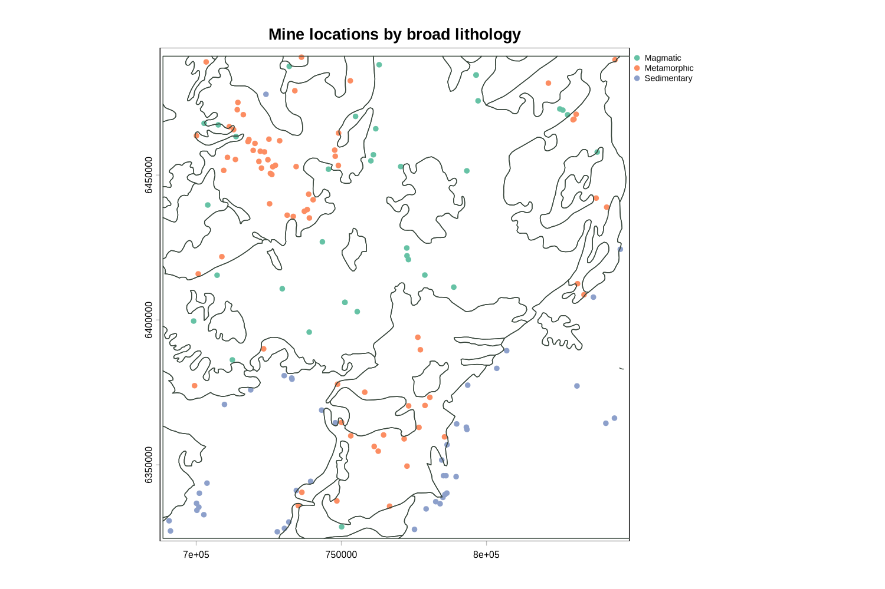
R console output
id.y TYPE DESCR
1 1 Sedimentary Sandstone
2 2 Metamorphic Schist
3 3 Sedimentary Limestone and marls
4 4 Sedimentary Limestone and marls
5 5 Metamorphic Schist
6 6 Metamorphic Schist
Magmatic Metamorphic Sedimentary
35 74 44
How to read the result. All 153 points have a lithology match in this teaching dataset. A point located on a rock unit is a spatial association; it is not, on its own, evidence of a causal geological or environmental relationship.
5.5 · Export geometry and attribute results
Why this step?
Save the intersection and enriched point layer as separate GeoPackages. Export compact CSV summaries of overlay features, selected counts and point attributes. Relative paths begin at the course project root; overwrite = TRUE permits replacement of an existing output.
# Export both a geometric overlay and a point layer enriched by location.
writeVector(overlays$Intersect, "outputs/05-lithology-departments.gpkg", overwrite = TRUE)
writeVector(mines_joined, "outputs/05-mines-with-context.gpkg", overwrite = TRUE)
write.csv(overlay_summary, "outputs/05-overlay-summary.csv", row.names = FALSE)
relation_summary <- data.frame(relation = relations, polygons = polygon_counts,
lines = line_counts, points = point_counts)
write.csv(relation_summary, "outputs/05-selection-counts.csv", row.names = FALSE)
write.csv(as.data.frame(mines_joined), "outputs/05-mines-with-context.csv", row.names = FALSE)
Why these functions?
writeVector()— Save the overlay and the enriched points as reusable GeoPackages.write.csv()— Export summary tables and enriched point attributes as CSV.data.frame()— Present feature counts, overlay fields and selected-feature counts as tables.as.data.frame()— Inspect the attribute table separately from its geometry.
Result of running this code in R
R console output
[Completed successfully; no console output returned by this block.]
How to read the result. Find the files in RStudio’s Files pane → outputs. GeoPackages preserve geometry and attributes; the point CSV contains attributes only and is not a substitute for the exported spatial layer.
5.5.1 · Verify that the join preserved the points
Why this step?
Check point count and the geometry arrays before and after the joins. Reopen the GeoPackage to verify that it is readable and declares the expected CRS and feature count. Record the R session for reproducibility.
# Confirm that the attribute joins did not change point count or geometry.
reopened <- vect("outputs/05-mines-with-context.gpkg")
stopifnot(nrow(mines_joined) == nrow(mines),
identical(geom(mines_joined), geom(mines)),
same.crs(reopened, mines), nrow(reopened) == nrow(mines),
nrow(litho_groups) == length(type_levels))
c(original_points = nrow(mines), joined_points = nrow(mines_joined),
missing_department = sum(is.na(mines_joined$nom)),
missing_lithology = sum(is.na(mines_joined$TYPE)))
capture.output(sessionInfo(), file = "outputs/05-session-info.txt")
Why these functions?
vect()— Read the supplied GeoPackage layers or reopen an exported layer.stopifnot()— Stop if a CRS, identifier, feature-count or geometry-preservation check fails.nrow()— Count spatial features or attribute-match rows.identical()— Confirm that the geometry arrays are exactly unchanged by the attribute joins.geom()— Check that attaching attributes did not change the point geometry.same.crs()— Verify that spatial inputs and reopened exports use compatible reference systems.length()— Count groups or predicates to size the result vectors.c()— Collect department codes, labels and plotting settings.sum()— Count selected features or missing attribute values.is.na()— Count mine points with missing contextual attributes after the join.capture.output()— Record the software-session description in a text file.sessionInfo()— Record R and package versions used for the figures and outputs.
Result of running this code in R
R console output
original_points joined_points missing_department missing_lithology
153 153 60 0
How to read the result. The checks confirm 153 points before and after the joins, 60 missing department values and no missing lithology values. These are workflow checks; they do not establish the positional accuracy or completeness of the source data.
Practice: predict, run, explain
- Predict the difference between intersect(litho, dept) and crop(litho, dept) before inspecting their attribute tables.
- A mine point lies exactly on a department boundary. Would within and coveredby necessarily give the same result?
- Select geological lines that intersect a department, then explain why some highlighted segments remain outside it.
- How would you identify points outside the combined department study area?
- What would you do if extract() returned several polygon matches for one point?
Suggested answers
1. Intersect can transfer department fields and split records at department boundaries; crop retains the lithology input fields. 2. No: boundary treatment differs. 3. Selection retains whole features; clipping would change their geometry. 4. Negate is.related(points, dept, "intersects"), or test against an appropriately dissolved study region. 5. Inspect the cause—overlapping polygons or boundary matches—and choose an explicit one-to-many or summarised representation rather than dropping duplicates arbitrarily.
Intersection GeoPackage ↓ · Enriched mine-point GeoPackage ↓ · Point attributes CSV ↓ · Overlay summary ↓ · Predicate counts ↓
Function directory and resources
| Function · package | Why use it here? | R help |
|---|---|---|
add_legend()terra | Add a readable colour key to the spatial map using its plotted extent. | help("add_legend", package = "terra") |
aggregate()terra | Dissolve boundaries between polygons sharing the same broad lithology group. | help("aggregate", package = "terra") |
all()base | Require the geometry-validity checks to hold for every input polygon. | help("all", package = "base") |
any()base | Draw a selected subset only if at least one feature satisfies the predicate. | help("any", package = "base") |
anyDuplicated()base | Detect multiple polygon matches for a point before attaching attributes. | help("anyDuplicated", package = "base") |
as.data.frame()base | Inspect the attribute table separately from its geometry. | help("as.data.frame", package = "base") |
brewer.pal()RColorBrewer | Choose qualitative colours for broad lithology groups and rock descriptions. | help("brewer.pal", package = "RColorBrewer") |
c()base | Collect department codes, labels and plotting settings. | help("c", package = "base") |
capture.output()utils | Record the software-session description in a text file. | help("capture.output", package = "utils") |
cbind()base | Attach a checked, correctly ordered attribute table to a spatial point layer. | help("cbind", package = "base") |
character()base | Declare one text result per overlay when summarising retained field names. | help("character", package = "base") |
cover()terra | Replace overlapping areas of the first polygon layer with polygons from the second. | help("cover", package = "terra") |
crop()terra | Clip the first polygon layer to the second layer while retaining first-layer attributes. | help("crop", package = "terra") |
crs()terra | Inspect the coordinate reference system of the department layer. | help("crs", package = "terra") |
data.frame()base | Present feature counts, overlay fields and selected-feature counts as tables. | help("data.frame", package = "base") |
dir.create()base | Create the outputs directory before writing new files. | help("dir.create", package = "base") |
disagg()terra | Split multipart volcanic polygons into separate feature records. | help("disagg", package = "terra") |
erase()terra | Subtract department geometry from lithology polygons. | help("erase", package = "terra") |
ext()terra | Read layer bounds so selected and non-selected features share a complete map frame. | help("ext", package = "terra") |
extract()terra | Retrieve polygon attributes at mine-point locations. | help("extract", package = "terra") |
geom()terra | Check that attaching attributes did not change the point geometry. | help("geom", package = "terra") |
geomtype()terra | Select the appropriate polygon, line or point drawing method in the shared helper. | help("geomtype", package = "terra") |
head()utils | Preview fields and matches before processing the complete table. | help("head", package = "utils") |
identical()base | Confirm that the geometry arrays are exactly unchanged by the attribute joins. | help("identical", package = "base") |
intersect()terra | Keep shared polygon areas and combine the input attributes. | help("intersect", package = "terra") |
is.na()base | Count mine points with missing contextual attributes after the join. | help("is.na", package = "base") |
is.related()terra | Test whether each feature has a specified relationship with any department. | help("is.related", package = "terra") |
is.valid()terra | Check polygon validity before geometric overlays. | help("is.valid", package = "terra") |
length()base | Count groups or predicates to size the result vectors. | help("length", package = "base") |
library()base | Load terra for spatial operations and RColorBrewer for categorical colours. | help("library", package = "base") |
lines()terra | Overlay department boundaries or draw geological line features. | help("lines", package = "terra") |
list()base | Store each overlay result under its operation name. | help("list", package = "base") |
match()base | Reorder extracted rows to the original point identifiers before column binding. | help("match", package = "base") |
names()base | Read operation names or the attribute fields retained by an output. | help("names", package = "base") |
nrow()base | Count spatial features or attribute-match rows. | help("nrow", package = "base") |
numeric()base | Allocate result vectors and specify numeric output for feature counts. | help("numeric", package = "base") |
par()graphics | Arrange before-and-after maps side by side, then restore one map per panel. | help("par", package = "graphics") |
paste()base | Combine operation labels or retained field names into readable text. | help("paste", package = "base") |
paste0()base | Build a map title including the number of selected features. | help("paste0", package = "base") |
plot()base | Display a spatial layer and its categorical attributes. | help("plot", package = "base") |
points()terra | Draw all mine locations and highlight the selected points. | help("points", package = "terra") |
polys()terra | Draw source polygons and highlight selected polygons without clipping them. | help("polys", package = "terra") |
print()base | Display a sample attribute table for each overlay result. | help("print", package = "base") |
rainbow()grDevices | Give separate feature IDs distinct display colours in the disaggregation exercise. | help("rainbow", package = "grDevices") |
same.crs()terra | Verify that spatial inputs and reopened exports use compatible reference systems. | help("same.crs", package = "terra") |
seq_along()base | Visit each predicate in a fixed reproducible order. | help("seq_along", package = "base") |
seq_len()base | Create stable row identifiers and feature-number labels. | help("seq_len", package = "base") |
sessionInfo()utils | Record R and package versions used for the figures and outputs. | help("sessionInfo", package = "utils") |
show_selection()lesson | Draw the same map frame and colour key for polygon, line and point selections. | Defined in this lesson; see the linked code. |
sort()base | Order category labels consistently before constructing palettes. | help("sort", package = "base") |
stopifnot()base | Stop if a CRS, identifier, feature-count or geometry-preservation check fails. | help("stopifnot", package = "base") |
sum()base | Count selected features or missing attribute values. | help("sum", package = "base") |
symdif()terra | Keep areas belonging to either polygon layer but exclude their shared area. | help("symdif", package = "terra") |
table()base | Summarise mine counts by department or lithology, including missing matches. | help("table", package = "base") |
text()terra | Label individual geometries in the multipart-to-singlepart comparison. | help("text", package = "terra") |
union()terra | Combine polygon footprints and shared attributes, or combine map extents. | help("union", package = "terra") |
unique()base | Find the distinct lithological groups used to define categorical palettes. | help("unique", package = "base") |
vapply()base | Summarise each overlay with a known output type. | help("vapply", package = "base") |
vect()terra | Read the supplied GeoPackage layers or reopen an exported layer. | help("vect", package = "terra") |
write.csv()utils | Export summary tables and enriched point attributes as CSV. | help("write.csv", package = "utils") |
writeVector()terra | Save the overlay and the enriched points as reusable GeoPackages. | help("writeVector", package = "terra") |
Further references: terra spatial predicates · attribute extraction · terra method index.